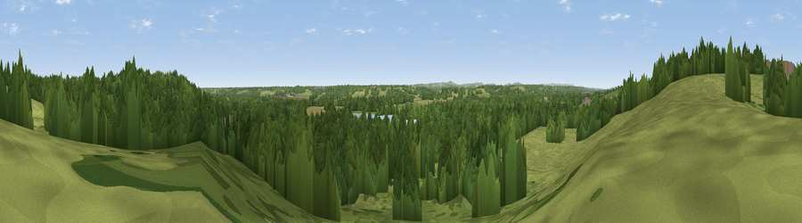

Viewpoint near Woolhampton
#36234 in England · top 56% of its area beats it · near WoolhamptonThe view, rendered

A 360° render of this exact spot computed from the terrain model, tree cover and land cover — summer colours, afternoon light, calibrated against photographs of famous viewpoints. Real trees, hedges and buildings will differ in detail.
The panorama
Grey silhouette: terrain skyline in each direction (720 bearings, Earth curvature and refraction included). Dashed green: skyline with trees (+15 m) and buildings (+8 m) as obstacles. Blue strip: how far the ground is visible on each bearing.
Where the view opens
Wedge length = distance to the farthest visible ground on that bearing (vegetation-aware). Rings at 10, 25 and 50 km.
What fills the view
54% woodland · 36% grassland · 4% cropland · 4% water · 2% built-up
Angular shares of the visible panorama (visual magnitude), not map area. Landscape diversity 0.45 (0–1 Shannon).
Key numbers
More beautiful places nearby
The staircase of upgrades: each row has a higher view potential than everything closer. Driving times are estimates from straight-line distance, calibrated against real road routing — check an actual route before setting out.
| Place | Direction | Drive | Score |
|---|---|---|---|
| Viewpoint near Upper Bucklebury | WNW · 3 km | ~7 min | 47.6 |
| Viewpoint near Cold Ash | WNW · 5 km | ~12 min | 48.8 |
| Viewpoint near Hannington | SSW · 11 km | ~21 min | 62.6 |
| Cottington's Hill | SSW · 11 km | ~21 min | 65.6 |
| Watership Down | SW · 12 km | ~23 min | 71.4 |
| Beacon Hill | SW · 15 km | ~26 min | 76.7 |
| Martinsell viewpoint | W · 39 km | ~58 min | 77.3 |
| Viewpoint near Buriton | SSE · 49 km | ~70 min | 80.0 |
51.39853, -1.18528 · source: screening · position refined by local search. Computed location — check access rights before visiting.